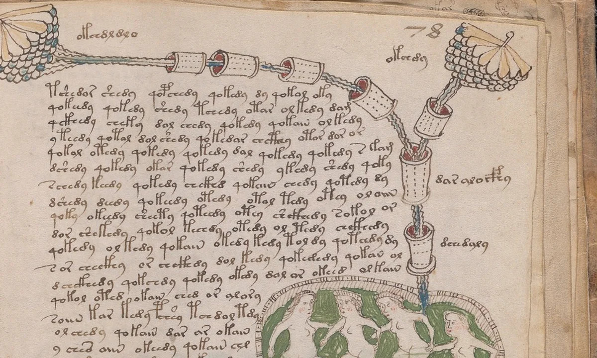
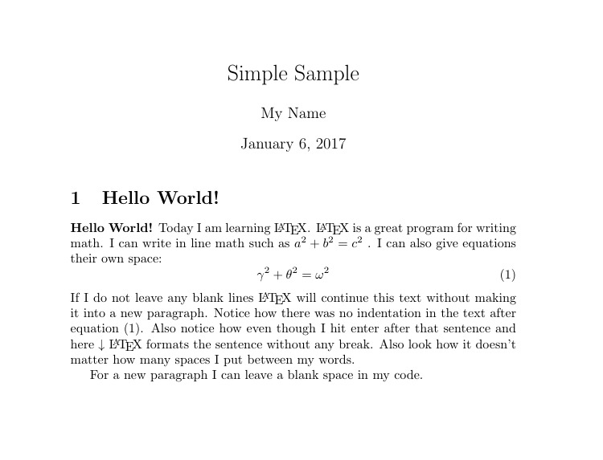
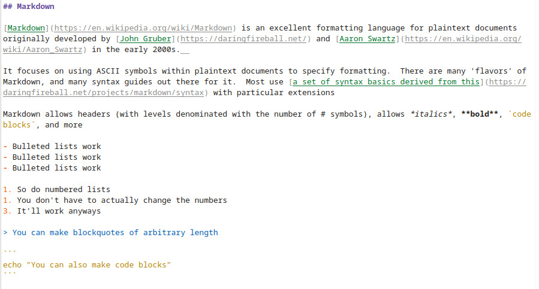

# Making the Act of Writing Suck Less ### Will Styler - CSS Colloquium <https://savethevowels.org/talks/make_writing_suck_less.html> --- ### Writing kind of sucks - It's wonderful, enjoyable, and important to our species - ... but the process, in modern times, sucks --- ### We are trapped in a world of unintuitive tools - "Do I want Semi-bold or bold here?" - "Wait, where'd that pagebreak go?" - "No damnit, keep indenting the old list, don't make a new one" - "Why are you trying to turn this entire paragraph into a link?" --- <img class="r-stretch" src="humorimg/fuckupdocument.jpg"> --- ### It wasn't always this way - With pen and paper, you can do whatever you please - If you want bigger, write bigger - If you want smaller, write smaller - If you want a picture, draw one ---  --- ### We have been convinced by bad tools that this is how writing is done - "What you see is what you get" (WYSIWYG) - "This window displays what the program thinks you wanted" - You generate text and then tell the tool what a chunk of text should look like by poking buttons - Over, and over, and over, hoping you do it consistently - Until the tool decides to do something else --- ### What if there were another way? - "What you want is what you get" (WYWIWYG) - "Here's what you asked for, if you'd like to make changes, I'll make it again" - "You tell me what the text is and what role it plays using **markup**, and how each role should look, and I'll make it happen" - "Give me a list of bibliography entries, and tell me where they're referenced, and I'll link them and format them" - "I could make this document into a Word Doc, a PDF, a website, a slideshow, whatever, just tell me what you want" --- ### We want to write, as smoothly as possible - We want to think about *what we're writing*, not *how to make it so* - We want our writing tools to get out of our way and let us write - **Anything causing friction between your brain and the final draft should be eliminated** --- ### Microsoft Word <img class="r-stretch" src="img/rasp.jpg"> --- ## Statement of Bias - I am a free-and-open-source software zealot with substantial trust issues - Controversial statements will be labeled with "🤡" - I am also a Unix person, and tend to use that philosophy - Your mileage may vary --- ### Today's Plan - The Semantics of Formatting - Word and why it sucks - LaTeX and why it sucks - Markdown and why it sucks - Pandoc and why it's awesome - My life's workflow --- ## The Semantics of Formatting --- ### Formatting should mean something - Why is the text up there bigger? - Knowing that seems important - Why is the 'knowing that' smaller and grayer? - Why are references formatted as they are? - What actual kinds of formatting do you need? --- ### For most people - Text and Basic text variations (e.g. *italic*, **bold**) - Lists and enumerations - Sections, Subsections, Subsubsections - Included images with captions - Included citations, links, and footnotes - Breaks and boundaries and boxes - **Every element of the text should have a reason for being one of these things** --- ### Bad formatting is bad teaching - "Wait, why is that a link?" - "I don't have enough information to find this citation" - "Why is this word bold?" - "Hold on, did we switch sections already?" - "This section isn't in the table of contents? What does that mean?" --- ### Formatting is important - It should be consistent, meaningful, visible, and understandable - ... and every single word should have a format that it should be - **Doing formatting wrong hurts your argument** --- ## Microsoft Word Sucks --- ### Microsoft Word is great for somebody's grandmother - "Oh, I put the blue around the text and then I press the black B and it gets blacker!" - "Wow! I can change the font to *squints* Comical Sans MS. How fun!" - "Ooh, look at this, I can put a picture of a minion in the corner!" - "I'm going to make this the best bridge club poster Edna and Rosemary have ever seen." --- ### It makes writing, then styling everything afterwards, easy - "I don't know what my document should look like, here's a platform to write it, then adjust it until it looks like what I think it should look like" - It is unquestionably powerful for exotic styling on a small amount of text --- ### You are not Edna - You know what your document needs to look like, or are told - Your documents are tens or hundreds of pages - It *matters* where the pictures show up on the page - You are not retired and do not have infinite time to press buttons - Thus... --- ### Word absolutely, irredeemably sucks for academic writing - So does GoogleDocs, LibreOffice, Scrivener, WordPerfect, and every other WYSIWYG editor - You don't *need* the advantages that these tools offer - You need it to shut up and make your documents - Microsoft hates you, and has the goal to extract the exact largest amount of money they can from you before you rebel (🤡) - Lots of academics turn to LaTeX --- ## LaTeX is better --- ### LaTeX is a form of the TeX programming language - Developed by Donald Knuth - You write the 'source code' for the finally rendered document - You write, write, write, and then 'compile' your document to see the form - Free, open-source, and community driven - In practice, use XeLaTeX which supports Unicode (🎉) --- ### Documents are programmed - "Take this code mixed with text, make it into a pretty document" - The files you create are plaintext, and use no proprietary format - You don't do anything besides generate content, and declare how that content should be formatted --- <img class="r-stretch" src="img/latex_sample_code.jpg"> ---  --- ### LaTeX does a lot of the work for you - Section numbering does not need humans - Compiling and formatting your bibliography based on citation codes is not a creative task - Tables of Contents are deterministic from section labels - Numbering Figures, Examples, and Diagrams is dumb - Pulling in tables from files generated in R is easy - Journals often provide TeX templates, so your document is *automatically* in the right format --- ### The boring parts are regenerated every time you run the command - You never need to 're-number' anything, and will never 'miss a citation' - All references can stay current, even when their referents change - You don't need to manually move diagrams to fit the text, it happens for you - You can just change the document, and it'll change all the rest --- ### LaTeX has incredible depth - You can generate slides, [diagrams](https://savethevowels.org/talks/diagrams), and more in LaTeX - You can create exams, letters, handouts, and hundreds of other things - It speaks Math as a first language, and syntax trees, and numbered examples, and... - It is all you actually need for document generation for the rest of your life - LaTeX can do The Thing, if you're willing to put in The Time. - ... but that's partly why.... --- ## LaTeX sucks --- ### Microsoft Word's Learning Curve <img class="r-stretch" src="img/can_phone.jpg"> --- ### LaTeX's learning Curve <img class="r-stretch" src="img/cable_management.jpg"> --- ### Installing LaTeX is not straightforward - Not available for all platforms (e.g. iOS, Android) - Big, bulky downloads - Finicky installs - It's often easier to use an online service (e.g. [Overleaf](https://www.overleaf.com/)) --- ### Track Changes isn't a thing - Except on Overleaf - Or unless you have both versions of the .tex file and use file comparison tools --- ### "You don't use Word?!" <img class="r-stretch" src="humorimg/disgusted.jpg"> --- ### LaTeX is harder to share - Folder containing images, bibliography info, included files, etc rather than *one file* - You can't edit the 'final product' --- ### LaTeX is *heavy* - \textbf{} - \subsubsection{} - \includegraphics{/home/wstyler/Documents/awfulthings/microsoftword.jpg} - ``` ``Quotes use two different kinds of punctuation to be done right'' ``` - LaTeX crashes when you include a % or # without an escape character `\#` - Do you really want to `\` every time you `&` `%` `$` `#` `_` `{` `}` `~` `^` `\`? --- ### LaTeX has *massive* power, but with *massive* overhead - Anything is possible, but *everything* is a bit more difficult - For writing a quick letter of recommendation, or website, or document, LaTeX is overkill - What if there was a way to do *most* of your writing in a non-sucking method, and use LaTeX commands only when you need more power? - Then put the output into whatever format you need? --- ## Markdown is amazing --- ### Markdown is a lightweight plaintext formatting language - [Developed by John Gruber](https://daringfireball.net/projects/markdown/syntax) and [Aaron Swartz](https://en.wikipedia.org/wiki/Aaron_Swartz) in the early 2000s - Contains a set of basic commands allowing you to do most text formatting things quickly - Widely supported by Github, Discord, Google Docs, Gradescope, Jupyter, RStudio, Reddit, and many many more - Allows you to write *plaintext* which can easily be formatted however you'd like --- ### Aside: Plaintext is the best format for storing data (🤡) - Proprietary formats rot and die - Programs live and die - Licenses and subscriptions expire - "Open" formats are great, but they rot too - You *will* have to open a file you created 20 years ago - If nobody's written code for that format in 10 years, can it really open? - Plaintext will always survive - It is the tardigrade of file formats - Make sure your data is (or can be) in a plaintext readable format - .txt, .md, .tex, CSV/TLD, XML, JSON, HTML --- ## Never put your data into software you can't take it out of --- ### Markdown uses symbols to format plaintext  --- <img class="r-stretch" src="img/markdown_output.jpg"> --- ### Markdown is super easy - It's an open standard, which is available in a number of places - It is web-native, allowing linking and playing well with CSS (Cascading Style Sheets) - It handles the most common formatting operations - It's readable as plaintext, but can be easily converted to other formats - It works with any language which supports the symbol set --- ### Markdown is super fast - You're basically writing words, but occasionally adding bits - You can write as fast as you can type and think - As long as you have a full keyboard, and a keyboard-based editor, *you never have to move the mouse* - Formatting adds 1-5 keystrokes to a word - You never need to 'escape' a character - Files are in the tens of *kilobytes* - All of my 2,500 markdown files fit in 17 MB --- ### I use Markdown for everything - Documents? Markdown - Letters of recommendation? Markdown - [Websites](https://savethevowels.org/)? Markdown - [This slideshow](https://revealjs.com/)? Markdown - My brain naturally writes in Markdown --- ### It's supported by a lot of great apps - Jupyter Notebooks and RStudio/RMarkdown support it out of the box - [Obsidian.md](https://obsidian.md/) is what I use for all the writing I control - There are hundreds of other markdown editor apps - None of them have vendor lock-in, because it's plaintext (🤡) - You can edit it using a boring command line text editor - `vim` and `emacs` both have strong packages for Markdown support --- ## Markdown sucks (a little) --- ### Markdown is a tiny specification - Not all features are universally supported (e.g. footnotes) - There are some non-standard specifications (e.g. Github flavored markdown) - There's now RFC 7763 and 7764 which standardize it - It simply doesn't have some formatting things we want --- ### Missing pieces in Markdown - Tables and ~~strikethrough~~ are unreliably implemented across platforms - Colors and image styles require external CSS - References aren't a thing - You only get five levels of Section Heading - Math formatting isn't universally allowed/respected --- ### Markdown requires another program to style it - You can write all this wonderful semantically formatted text - But without help, it's just plaintext - Like LaTeX, your documents need to be *compiled* to be pretty - So, you need to convert it to something else --- ### Markdown is designed for conversion - Since Markdown is just a set of format specifiers, it's easy to turn into something else - Technically, you could just convert it to any kind of formatting convention - Wait... omg --- ## Pandoc --- ### Pandoc is a document conversion program - Written by John MacFarlane in 2006 - A philosophy professor at UCB - All it does it turn document formats from one thing to another - Takes as input epub, HTML, JSON, LaTeX, Markdown, ODT, Office XML, Org Mode, Wiki Markup (among many more) - Outputs the document as epub, HTML, InDesign, JSON, LaTeX, man, Markdown, ODT, Office XML, Org Mode, PDF, Plaintext, RTF, Slideshows (reveal, Beamer), Wiki - That's all it does - Turns one format into another --- ### Pandoc will change your life - "Oh, we need that TeX article in Word format" "Done." - "Could you make your slides into an HTML single page sheet for note taking?" - [Here's this slideshow as a single page](https://savethevowels.org/talks/make_writing_suck_less_handout.html) - "I have a markdown file, but I want it pretty and formatted like TeX" - "I want to create all of my syllabi using markdown, and apply a custom format which makes them pretty HTML" - <https://savethevowels.org/101> - <https://savethevowels.org/113> --- ### Pandoc allows mixing of markup conventions! - You can write mostly in Markdown, but intersperse a bit of HTML or LaTeX - Pandoc will just see it, and pass it through - If you convert to a format where the additional stuff is not supported, you'll just see the code - **You can write mostly in Markdown, and then use LaTeX where you absolutely need LaTeX's power** - Write in Markdown with LaTeX, then have Pandoc LaTeXify it, then just make a PDF --- ### Markdown + LaTeX is wildly powerful - 98% of the document is in a formatting language which is fast and easy to write - 2% of the document does the 'power user' stuff - You can use inline references, citations, and links to prior sections - You get *all of the power of LaTeX, but you can write fluidly* --- ### This is how I wrote my dissertation, as well as many of my papers - This allowed me to write ~70% of my dissertation on an iPad on a 1.5 hour bus ride to and from work - I can revise a paper I'm working on *from my phone* - You just compile it to LaTeX with Pandoc, and PDF it - The only raw LaTeX I use is for writing Multiple Choice Exams - That's just because I haven't written code to turn Markdown into numbered questions and A-E responses --- ### You can also use different templates - "Use this tex template to make this text a letter of recommendation" - "Use this HTML template to make a page for my website" - "This is a general document, just make a generic PDF" - "Everything in this folder is slides, so stick my reveal.js header and footer to either side of it" --- ### Pandoc doesn't really suck - It's a command line tool, which might suck a little for somebody for five minutes - Install it using `brew` on Macs, using your package manager on Linux, and [there's a Windows installer too](https://pandoc.org/installing.html) - You'll also need a working LaTeX install to make it work for PDFs - But once it's set up, it's beautiful --- ## This is my life now --- ### Everything is written in Markdown - Using [Obsidian](http://obsidian.md) - Things that just need written down digitally stay in Obsidian - Effectively forming a [Zettelkasten](https://en.wikipedia.org/wiki/Zettelkasten) - Here's [a great intro to that approach](https://www.soenkeahrens.de/en/takesmartnotes), Sönke Ahrens 'How to Take Smart Notes' - Different folders for 'talks', 'docs', 'letters', 'offline', 'web' that need to be shared --- ### I use Pandoc to create polished documents where I need it - Different templates for generic documents, websites, letters, slideshows, and more - It's very easy to create a new document and have a pretty version of it quickly --- ### Let's get nerdy... --- ### [This Script](https://github.com/stylerw/scripts_and_dotfiles/blob/main/shell_scripts/gen_slides_docs_letters.sh) runs every thirty seconds - It checks for changes in each of those folders - It creates new html and PDFs of everything changed in `docs` and `offline` with a generic template - Docs gets uploaded to my website - It renders changed things in `web` using my website HTML template and uploads them - It creates new PDFs of everything changed in `letters` with an academic letter template - It creates reveal.js slideshows and handouts for everything changed in `talks` --- ### This is the dream - I sit, I write - ... and beautiful formatted documents just appear - Formatting is as I desire, automatic, and sensible for the kind of document - I can write a letter of recommendation using speech-to-text on my phone while walking home from the post office, and it's a formatted PDF when I get home - And you change the format in one place, and all your documents change to match - You spend no time on managing documents, formatting, or otherwise, just writing --- ### Writing always sucks a little - But you can make it better by ensuring that your tools aren't adding to the suction --- <huge>Thank you!</huge> <https://savethevowels.org/talks/make_writing_suck_less.html>